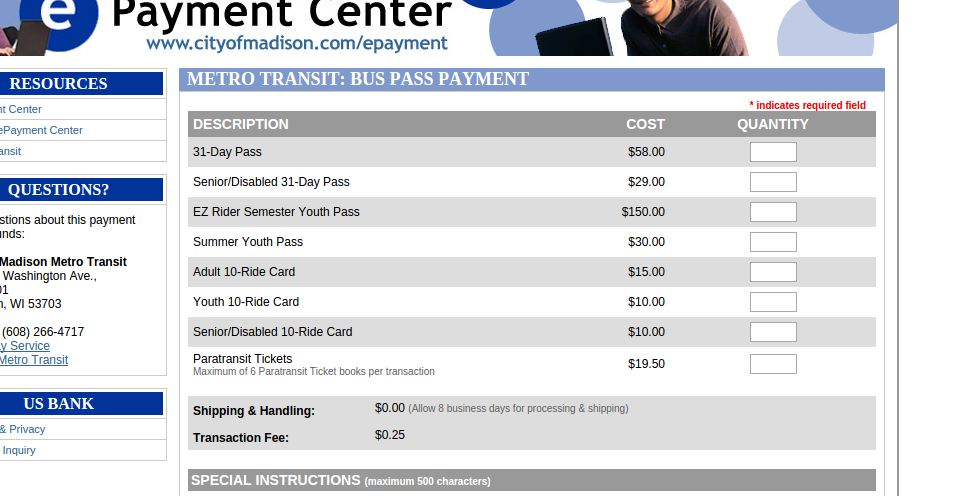
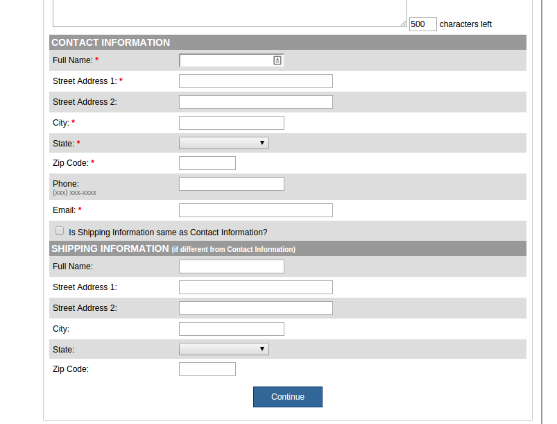

Using Selenium to Buy a Bus Pass
A brief tutorial of my new favorite Selenium script.
I take the bus everyday. It's terrific. There's nothing better than getting a full sixty minutes everyday to close your eyes, drink coffee, and get lost in a podcast before work.
I wish I could say that purchasing bus passes from Madison's website was just as relaxing. Because my wife picks me up from work in the afternoon, it is most cost effective for me to buy a new Adult 10 Ride voucher every two weeks. Every two weeks, I have to dig through their crusty website to find their purchase form. All in all, there are about six pages across two different domains - each loaded with their own set of over-crowded menus and repetitive forms.
I am sure I was using the site wrong. At one point I tried to make a persistent account. I bailed half way through, fearing I was actually about to sign up for a miracle pill or a magazine subscription.
The Year of Automation
There had to be another way! Sure, perhaps the old 2015 Alex would have just endured this bi-weekly punishment. But this is 2016, damnit. Even typing those numbers in this blog post makes me feel like I am living in a science fiction novel.
This year, I decided not to put up with this chore. I decided to adapt, survive, and make a Selenium script that would traverse this awful website for me.
Selenium
Selenium is a terrific little service that allows you to programatically navigate web pages. It is a great choice for integration testing and end-to-end testing when you need more granular control over your browser.
Selenium is available in most languages. I went with the python wrapper.
As a warning, this is essentially a web-scraper. Scripts that programatically navigate websites work best with plainly-named ID tags and simple, native HTML widgets. The fewer bells and whistles, the better. This makes a municipal website like www.cityofmadison.com a great candidate for Selenium automation.
Building busbot
Let's walk through busbot. Here is the basic skelaton of a script.
from selenium import webdriver driver = webdriver.Firefox() driver.get('http://google.com')
Running this script (after installing the selenium pip package) will
open Firefox to the Google homepage.
Instead of the Google homepage, let's go to the first page of the ordering process - this url. Here we see our first obstacle - the dreaded "Terms and Conditions".

Figure 1: To their credit, this is much better than the iTunes one
This is easy enough with Selenium. We can select the element by ID, click it, then do the same with the "confirm" button.
from selenium import webdriver driver = webdriver.Firefox() driver.get('https://www.cityofmadison.com' '/epayment/metro/busPass/index.cfm') checkbox = driver.find_element_by_id('acceptTerms') checkbox.click() submit = driver.find_element_by_id('submit') submit.click()
Works like a charm. The program passes the confirmation and follows a redirection to the next page.

Now we need to enter the quantity of tickets. We can grab the "Adult 10-Ride" quantity input by its unique ID and send text input.
quantity_text = driver.find_element_by_id('product_62') quantity_text.send_keys('1')
Further down on the page, we find our first contact information form.

These fields are missing ID's. Do we slink away in defeat? Of course
not. Selenium's API has ample methods for retrieving elements from the
DOM. As it happens, each input has a unique name attribute.
We simply need to retrieve each input by its name attribute and send
it text, just as we did before. But the iterative nature of this form
gives us a chance to be fancy. I chose to put each value in a
name/value dict and iterate over each pair.
fields = {'name': 'Alex Recker', 'Address': '123 Sesame St', 'City': 'Madison', 'Zip': '53704', 'email': 'alex@reckerfamily.com'} for name, value in fields.items(): elem = driver.find_element_by_name(name) elem.send_keys(value)
What about "State"? This isn't a text field on the page, so sending
input via the keyboard will not get it to select "WI". We need to
treat the dropdown differently. We can select the element, then search
for child elements by tag name, which we expect to be option
elements. Selenium will return a list, allowing us to iteratively
inspect and click a qualifying option.
fields = {'name': 'Alex Recker', 'Address': '123 Sesame St', 'City': 'Madison', 'State': 'WI', 'Zip': '53704', 'email': 'alex@reckerfamily.com'} for name, value in fields.items(): elem = driver.find_element_by_name(name) if name == 'State': # State Dropdown for option in elem.find_elements_by_tag_name('option'): if option.get_attribute('value') == value: option.click() break else: elem.send_keys(value)
Next, we tick the "Shipping information same as Contact Information" option and submit the form.
driver.find_element_by_name('notice').click() # same as billing address... driver.find_element_by_id('submit').click()
The rest of the code is rinse and repeat. I've cleaned up the project and modified it to read personal data out of a YAML file before execution - just in any fellow public transit warriors want to use it themselves.
Look, Mah - No Hands
Here is a demo of the whole run through using fake data. The last page throws a payment validation error. Call me a miser, but I didn't feel like giving away my real credit card number just for the sake of a demo.
Taking it Further
Looking Selenium's python API, it's not hard to imagine how to take this further.
- Validating payment information before submit with
assertand exceptions - Custom configs to purchase with different options (card or check)
- Hooking into
crontabfor a truly automated experience
Next time you find yourself wrestling with a website that should have died decades ago, consider putting Selenium to work and getting on the automation bus.